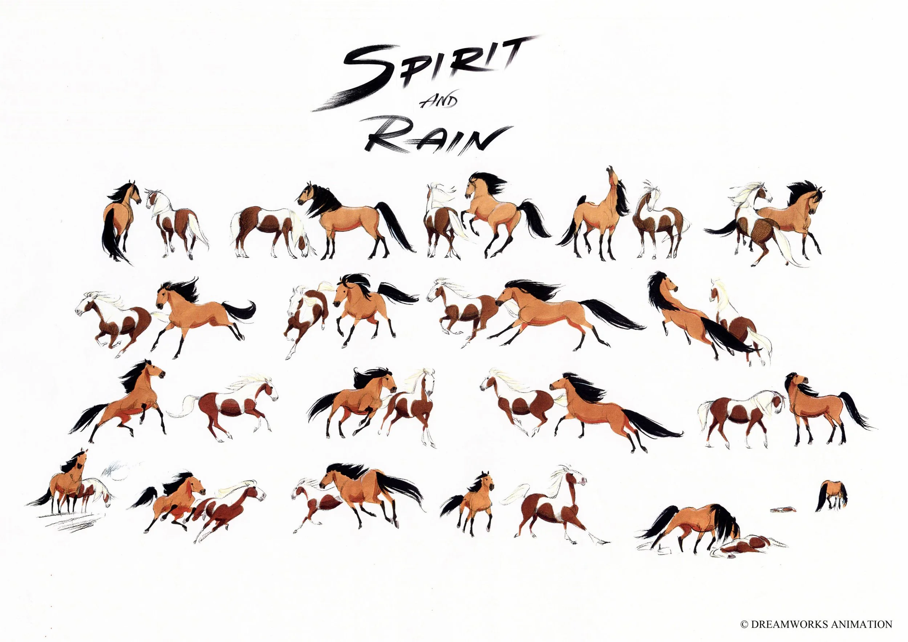
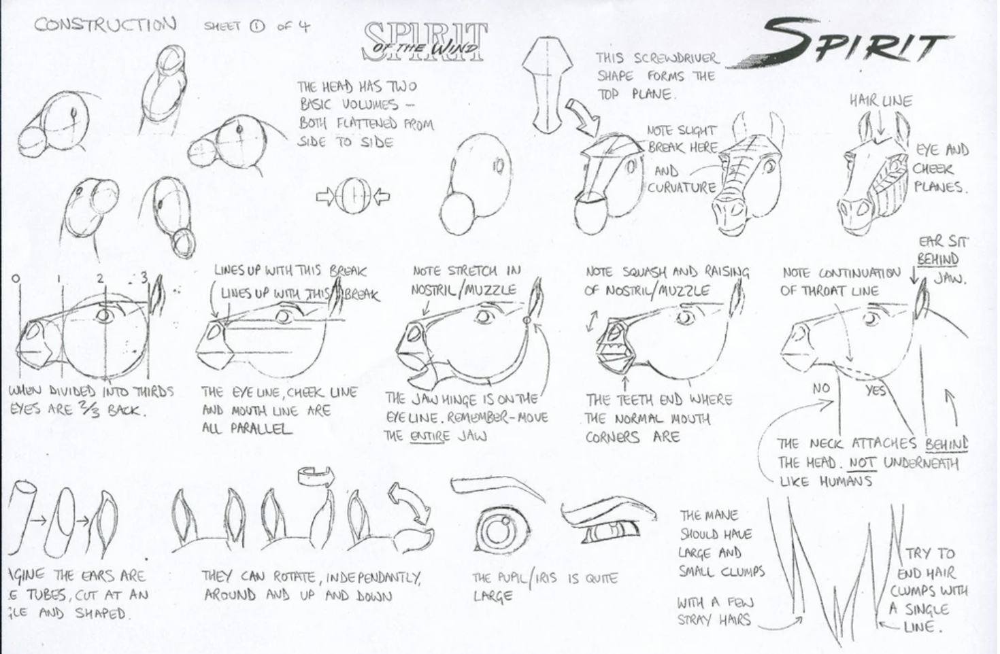
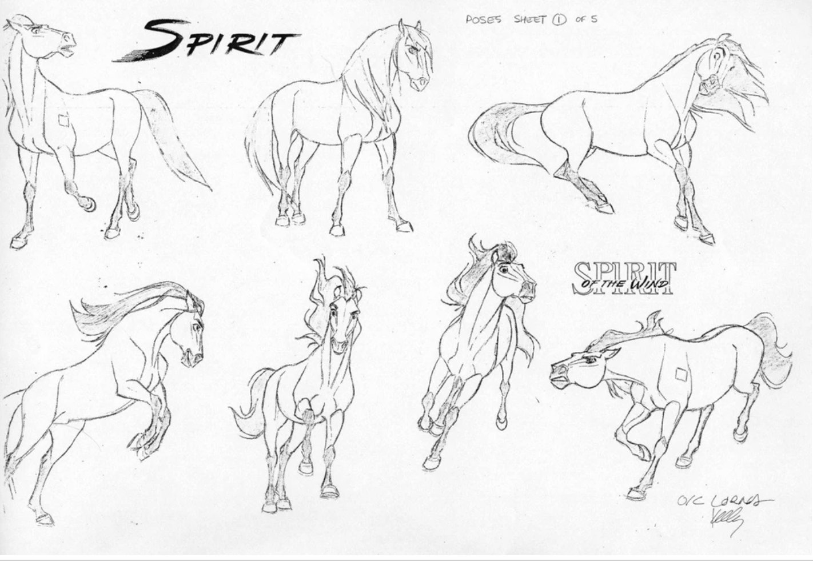
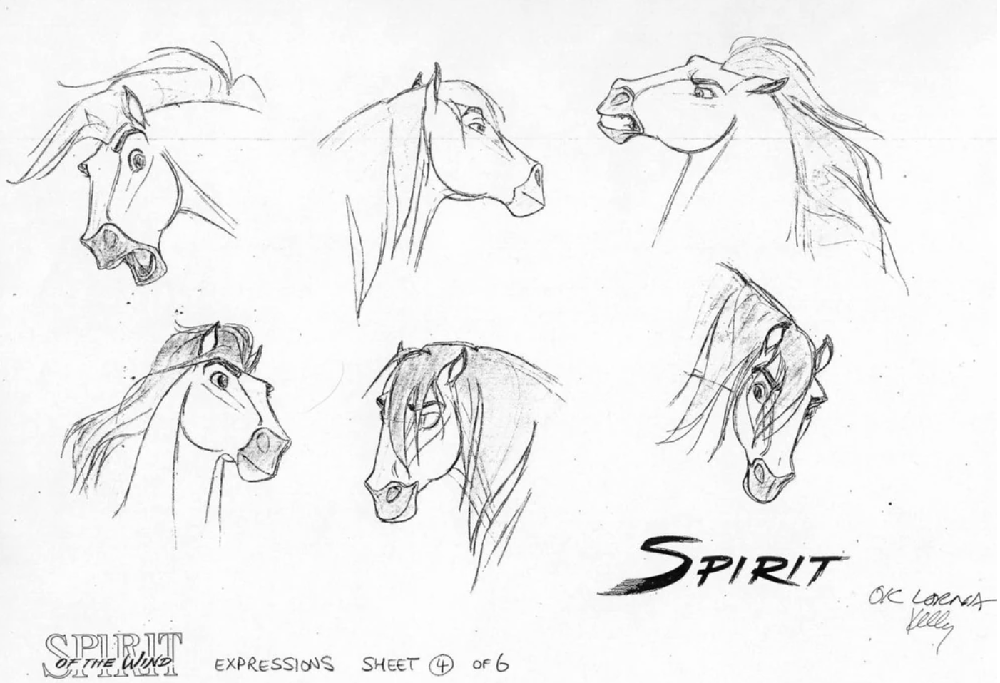
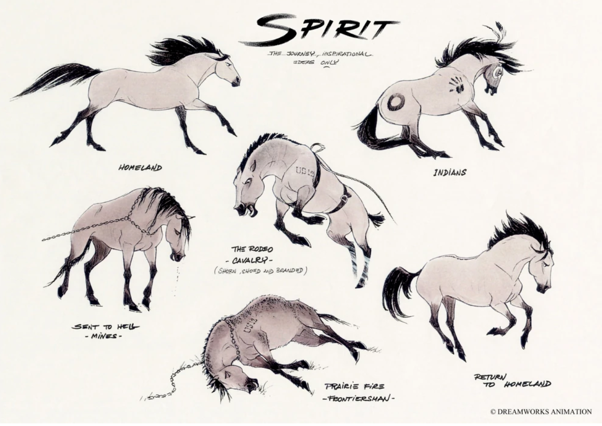
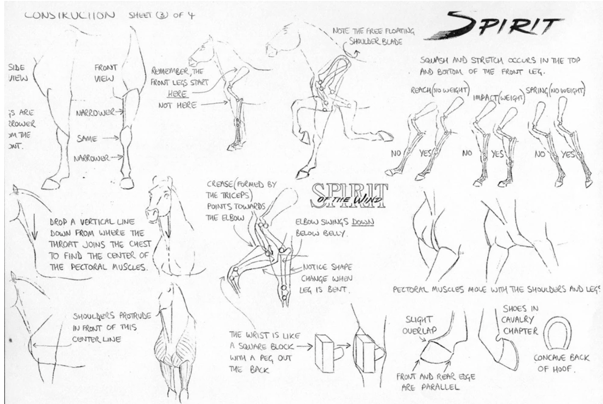
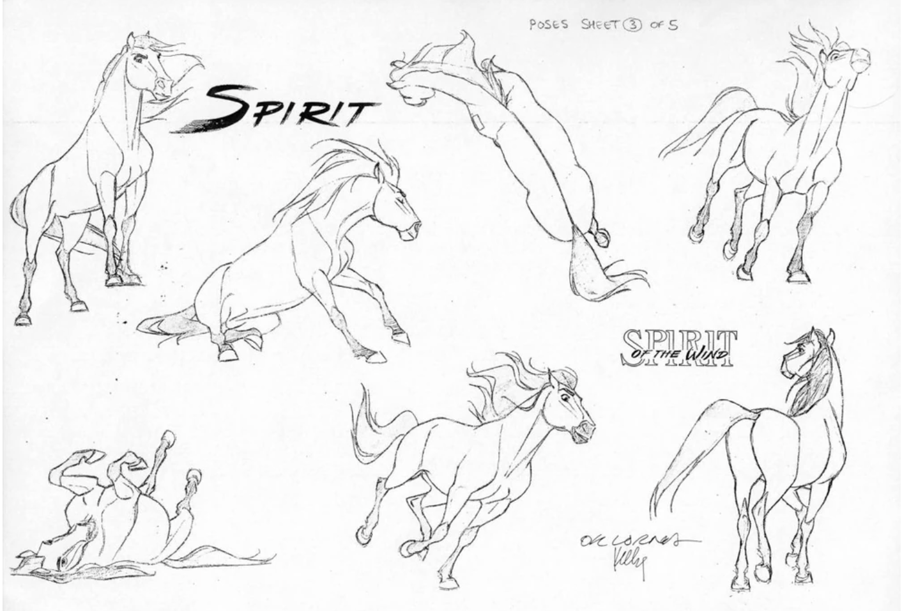
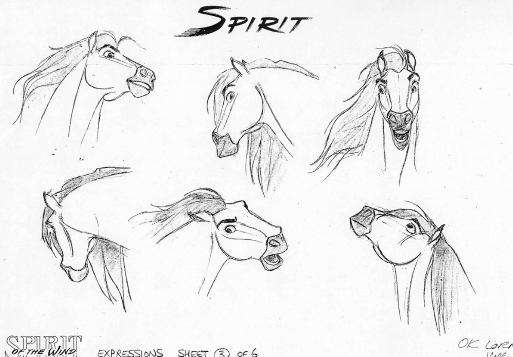
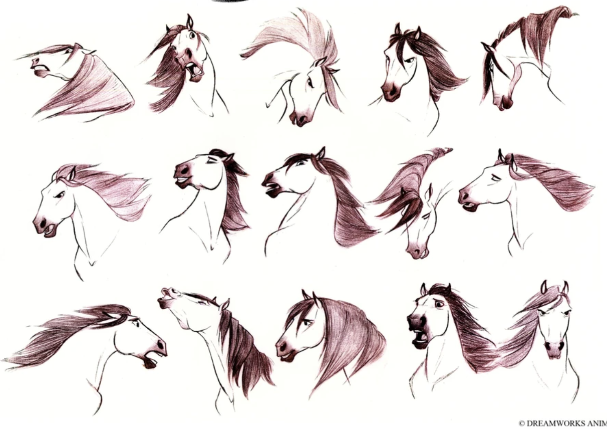

Spirit: Stallion of the Cimarron was made over the course of four years using a conscious blend of traditional hand-drawn animation and computer animation. James Baxter said that the animation was the most difficult piece of production he worked on for a movie: "I literally spent the first few weeks with my door shut, telling everyone, 'Go away; I've got to concentrate.' It was quite daunting because when I first started to draw horses, I suddenly realized how little I knew."
The team at DreamWorks, under his guidance, used a horse named "Donner" as the model for Spirit and brought the horse to the animation studio in Glendale, California for the animators to study.
Sound designer Tim Chau was dispatched to stables outside Los Angeles to record the sounds of real horses; the final product features real hoof beats and horse vocals that were used to express their vocalizations in the film. Screenwriter Fusco wrote narration as a guide for the animators, but most of this was not used so as not to anthropomorphize the characters: what little remained in the film is voiced by Matt Damon.
The production team, consisting of Kelly Asbury, Lorna Cook, Mireille Soria, Jeffrey Katzenberg, Kathy Altieri, Luc Desmarchelier, Ron Lukas, and story supervisor Ronnie del Carmen took a trip to the western United States to view scenic places they could use as inspiration for locations in the film. The homeland of the mustangs and Lakotas is based on Glacier National Park, Yellowstone National Park, Yosemite National Park, and the Teton mountain range; the cavalry outpost was also based on Monument Valley.







